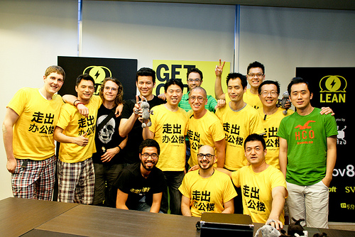
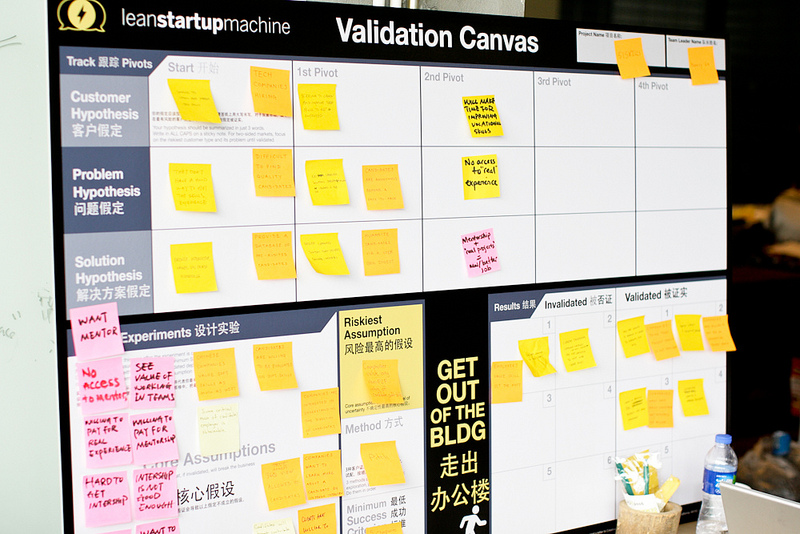
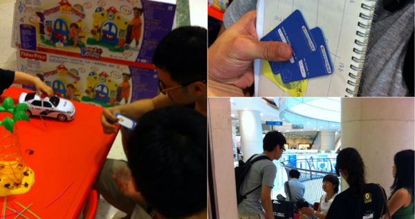
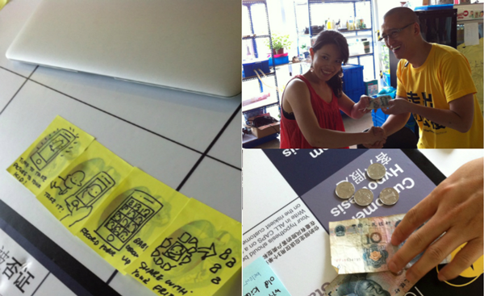

按照惯例，每次参加社区活动，都应该Validated Learning。此为参加中国第一次Lean Startup Machine活动的总结。再次感谢techyizu团队的完美发挥。

三阶假设
对于任何一种成功产品和服务都满足三个核心假设：有人有这样的需要；在获得这样需要的过程中有这样的问题；他们会使用我们的方案解决这些问题。那么任何想法的开始都应该变成这样三个假设，例如你有一个让爱狗人记录狗狗成长记录的主意，假设这个主意叫作dogMemo，这个主意就可以变成下面三个假设：
- 我认为狗主人出于爱狗都会想要记录狗的成长；
- 我认为他们缺乏一种方式来记录狗的成长；
- 我认为dogMemo可以解决他们无法记录狗成长的问题。
这三个假设分别代表三个方面：客户、问题、和方案。

对客户假设来说，包含三个方面：谁（所有狗主人）、驱动（出于爱狗）、目标（想要记录狗的成长）；对于问题假设来说，包含两个方面：问题本身（没办法记录）；当前方案（无）；而方案假设则代表我们提出的解决方案能解决现有问题，且比现有方案好。上图为使用Lean Startup Canvas收集假设。
寻找前提
产品的失败来自于三个假设的不成立──没有狗主人记录狗成长或者不是出于爱；狗主人有自己的方式记录成长；dogMemo不足以比现在的方式好。那么我们尽可能地验证这些假设“不成立(Invalidated)”则是我们寻找到正确产品之路的关键。这也是Lean Startup的关键，产品创意者被自己的想法限制，过度保护，使得最后的设计和用户越来越远。
每一种假设背后都有一系列前提，这些前提一一成立使得这些假设最终成立。接下来我们需要找到这些“前提”。例如：狗主人会记录自己爱犬的故事；狗主人觉得现在的方式太麻烦；狗主人接受新的方式记录狗的成长。
只有这些前提一一成立的时候，我们所有的假设才成立──而这些前提（assumption）就是我们需要进行验证的。
Pivot和Persevere
有必要了解Lean Startup中的两个核心概念：Pivot和Persevere。Pivot可以理解为一组三阶假设，而事实上三阶假设已经代表了一个完整价值定位：为谁的需要，提供什么，解决什么问题。所有实践围绕的就是如何建立一个最准确的Pivot即价值定位（Value Proposition），而基调是如何打破原有的价值定位（Pivot）逐渐演进到更加准确的价值定位。
打破Pivot的方式是发现那些风险最高的前提根本不存在，例如没有“那个谁”、没有那个需要、没有那个问题等等。而当一个风险最高的前提被证明存在我便进入Persevere模式──暂时这个Pivot是可以成立的，但需要证明下一个风险最高前提存在。接下来我们看什么是风险最高的前提。
风险最高的前提
总有一个前提是所有的全部，意味着如果这个前提没有满足，其他的都无从谈起──这便是摧毁你设计的核心。在上面的例子里，自然是“狗主人会记录自己爱犬的故事”，这就是我们需要验证的第一个前提。
Lean Startup中不允许任何没有被证实的前提，每次只证明风险最高前提的成立，即在这里不去证明狗主人是不是觉得现在的方式麻烦。
设计一个实验
去证明这个风险最大的前提，我们需要设计一个实验，期待的结果是“前提成立”被证实（Validated）或证伪（Invalidated），如果被证实，我们即可进入下一个阶段的前提验证（Persevere）──下一个前提是什么？如果被证伪（Invalidated）则需要重新调整三阶假设（新的Pivot），这个过程叫作“Persevere or Pivot决策”
实验的设计可以有多种多样，为了验证这个前提“狗主人会记录自己爱犬的故事”我们可以采用问卷调查、随机访问、搜索SNS、调查专业人士（如宠物商店经营者）等等。

上图中是我们在Mall里选择合适的人群进行访问，最后发现有一张精致的产品卡片，会对整个过程有很好的帮助。
当收集的证据足够证明整个前提的成立，我就可继续保留（Persevere）我们的Pivot，即进入对下一个未必证实成立的前提进行验证的实验，在这里是：“狗主人觉得现在的方式太麻烦”。同样我们需要一个实验去证明这个前提存在。
新的Pivot
假设我们的实验结果告诉我们最高风险前提（Riskiest Assumption）不成立，即“狗主人不觉得现在的方式麻烦”，我们则到了打破之前Pivot的关键点，即之前的价值定位（Value Proposition）不准确，需要重新建立新的Pivot。
建立新的Pivot既是在原有的三阶假设上进行重新包装，狗主人对现在的方式满意也许来自于对价值诉求的强烈程度，我们是不是能找到更细化的狗主人，他们对记录狗的诉求更多，在之前的用户假设前加一个定语“名贵犬主”、“第一次养犬”、“为了培养孩子爱心而养犬的主人”等等，这就是新的Pivot。
接下来做的事情又是重复上面的“寻找风险最高假设”到“设计实验”再到“Persevere or Pivot决策”。
形成MVP
一般通过多次的Pivot或Persevere，前两个假设都被证实的时候，例如：为了培养孩子而养犬的主人会鼓励孩子记录狗狗的一生培养坚持和爱心，现在的方式不容易让孩子坚持也收不到效果。我们开始形成一些产品的设计，在这里我的观点是尽可能晚的产生产品的思维，尽可能把大量的学习放在前两个假设的证明过程中。
事实上，Lean Start里面MVP的过程分为三个阶段：探索期（Exploration）、雏形期（Pitch）和调整期（Concierge）。也就是说，前两个假设的证明过程本身是一种对问题的探索即Exploration，当已经证明了有需要的人群，已经明确的问题，问题只剩下如何让他们感到未来的方案要好过现在时，我们需要用一些草绘的手段绘制MVP的基础原型，展现给客户。而这里所验证的风险最高前提是：客户会喜欢我们的提出的方案。
寻找Early Adopters
Early Adopters是一群完全符合之前前两个假设的用户，他们确实是把养狗当作培养小朋友爱心、责任和坚持的途径，也在过程中发现小朋友不能坚持。
他们是帮助你完善设计的最好人选，我们可以通过展示最初雏形的MVP了解他们对未来方案可能产生的兴趣，不断收集反馈进行改进。
这些Early Adopters可能有以下几种类型：
- 客户强调自己有问题假设中提到的问题；
- 客户觉得这些问题是可以解决的；
- 客户自己已经投入一些时间、资源、和精力尝试解决这个问题；
- 客户在行为上已经产生了改变，坚持尝试解决问题；
- 客户在尝试解决问题上没有任何限制；
很难说，哪个层次上的Early Adopter会对你的产品有更大的帮助，过分强调自己方法的人可能对你的产品产生反作用。
但无论如何，只要你的产品好，这些人都可能是你产品的使用者、付费者、甚至推荐者，在产品设计的早期就让这些人加入，由助于使你的产品在一开始就贴和使用者的诉求。
而判断用户是不是Early Adopters的最好办法是看看他会为你的想法“支付”多少。
确定Early Adopters
我们用"Currency"来代表用户为你的想法“支付”多少。这里的货币可以是：留下邮件、留下电话、签名支持、甚至在只是想法的时候为它付费。

如上图，我们把基本的MVP草绘图展示给受访者，最终真正收集到三位受访者对第一个MVP设计的付费，他们则很有可能在未来成为我们未来产品的首批用户，好好对这些用户进行培养，有时会遇到预想不到的效果。
否定我的想法
否定我的想法（Invalidating my idea）是Lean Startup的核心精髓，即想尽办法消除各种假设中的最具风险的前提，不断调整假设（Persevere），已经建立新的假设（Pivot），寻找到合适的MVP切入点，并在雏形上（Pitch）上进行有针对性微调（Concierge）最终找到大部分Early Adopters愿意直接买单的MVP。
我们回过头来看看我们最初的三段假设，即价值定位（Value Proposition）是如何被我们推翻的，最终演化成新的价值定位的。
| Pivot 1 | Pivot 2 | Pivot 3? | |||
|---|---|---|---|---|---|
| 用户假设 | 我认为养狗人有记录狗成长的需要 | 我认为为了培养孩子爱心耐心和责任的养狗人希望和孩子一起记录狗的成长 | 我认为养狗人在孩子到一定年龄时他们会选择养狗让家庭更加充满趣味 | - | - |
| 问题假设 | 我认为他们在这个过程中遇到麻烦 | - | - | 我认为他们希望孩子更多的融入进狗狗的培养过程，但是现在好像有些不知所措 | - |
| 方案假设 | - | - | - | - | 有一种新的以家庭为单位帮助与狗狗互动的方式会被他们所喜欢 |
| 风险最高前提 | 养狗人都会记录狗成长 | 养狗人鼓励孩子记录狗的成长 | 在孩子7岁时添置一只狗 | 孩子总是放弃，和孩子之间也缺少互动，他们确实不知所措他们接受新的互动方式 | 有一种新的以家庭为单位帮助与狗狗互动的方式会被他们所喜欢 |
| 验证方式 | 问卷调查、SNS调查、随机访问 | 用户深入访谈 | 问卷调查、SNS调查、随机访问 | 用户深入访谈 | 用户深入访谈，MVP展示 |
| 验证结果 | [不成立]5.1%的狗主有记录狗成长的需要 | [不成立]12.5%的狗主有这个习惯，但55.6%的狗主人认为他们从未想过但觉得这是个好主意 | [成立]88.5%的受访者表示这也许是个不错的生活方式 | [成立]78.3%的受访者表示这是个问题 | [未知]不同客户表现了不同的观点 |
| 决策 | Pivot | Pivot | Persevere | Persevere | Persevere/Pivot |
到此，我们的MVP方向已经大概明确，在过程中也已经吸纳了一些Early Adopters，接下来要做的事情便是将MVP进行进一步的细化，产生精细度更高的原型进行进一步测试。
写在最后
Lean Startup最需要，也是最难让创业者改变的，就是印在T恤那句话“否定我的假设”，很多时候，充满热情的创业者会把追求自己最初的想法当成坚持梦想的一部分，而事情的另一个极端是简单的放弃，而非理性的分析和选择。
本次Lean Startup Machine的结果是由来自BYOYO的团队获得最后的冠军，在我们评委讨论的时候，谈到了两点：BYOYO是一个已经运行一年的团队，经过这次的活动，最初的原始想法产生根本的变化，通过分析和思考推翻自己曾经的想法需要勇气；其次在项目进行受阻时，团队还能够乐观的有冲劲的，更是有理性地继续，难能可贵。我想这是他们最后获胜的原因之一。
我还记得团队的领导Yawen同学很骄傲地跟我说：就是想让中国的父母学会如何教育好下一代。很简单很直白的，一点都不浮躁，只是想尽自己之能，做一些改变，这点让我回想起来，很是感动。看过了太多充满投机的创业，或者理想病毒的传销，非常高兴能看到一位踏踏实实，带着理想，微笑学习的创业者，加油啊，Yawen同学！
参考链接
Lean Startup Machine：这里介绍了Lean Startup Machine的情况；
Lean Startup：这里是Lean Startup的主站；
Startup Lesson Learnt: 这里是Eric Ries的博客；
Ash Maurya: Ash Maurya关于应用Lean思维进行产品设计相关的博客；
更多图片: 更多关于本次活动的图片；